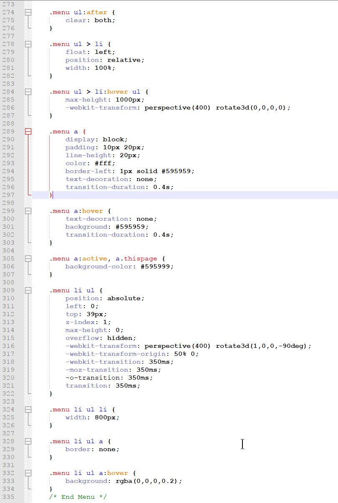

Menu
Main Page
The Work
SALT
Art
Sources
Sources
Links:
Background
Gretchen Haien's Incidentals
Cyborg Picture (Yes, it's Long John Silver from Treasure Planet)
Other Sources:
Past knowledge of HTML, CSS, and a sprinkle of JavaScript & jQuery
Pictures from my time at the Nashville Humane Association
Some random pictures I took in the past
My big ol' stylesheet

Top